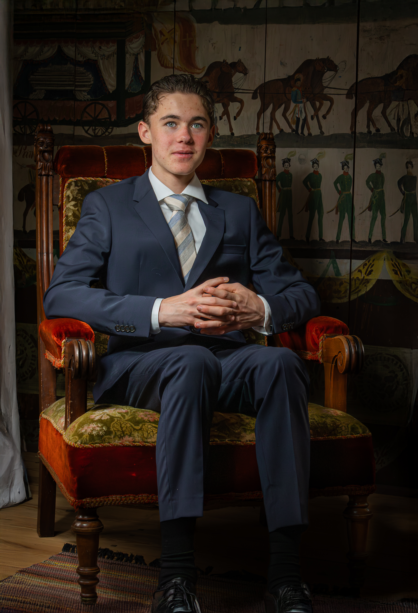

Portrett
For én person som ønsker et naturlig og gjennomarbeidet portrett, enten til privat bruk, profil, gave eller bare fordi tiden er riktig.
Portretter, parbilder og familiefoto ute eller på avtalt lokasjon. Jeg gir nok veiledning til at dere vet hva dere skal gjøre, men lar det være rom for uttrykk, samspill og øyeblikk som ikke er planlagt.
Dette er den permanente siden for familie- og portrettfotografering. Sesongtilbud kan komme i tillegg, men du kan sende forespørsel hele året.
For én person som ønsker et naturlig og gjennomarbeidet portrett, enten til privat bruk, profil, gave eller bare fordi tiden er riktig.
For små og større familier, par og generasjoner. Vi kombinerer gjerne noen klassiske gruppebilder med mer uformelle situasjoner.
Fotograferingen kan legges til skog, park, gård, bymiljø eller et annet sted som passer dere og uttrykket dere ønsker.
Et utvalg fra portrett, familie og konfirmasjonsportretter som viser hvordan jeg jobber med mennesker.





Portrettbilder tatt av Fotograf Spalder er blitt brukt som hovedbilde og redaksjonelt bilde i Ringsaker Blad. Det gir et konkret kvalitetsbevis på portrettarbeidet, samtidig som kundebilder ellers behandles ut fra avtalte bruksrettigheter.
Se publiseringenPrisen er først og fremst for selve fotograferingsoppdraget – planlegging, fotografering, utvelgelse, redigering og privat galleri. Antallet inkluderte digitale bilder står på hver pakke.
Bildene som følger med pakken velges uten ekstra kostnad. Ønsker du flere bilder uten vannmerke, gjelder disse prisene i FotoSky:
Utvalgte delingsbilder med Fotograf Spalder-vannmerke legges i egen «Gratis bilder»-fane og kan lastes ned uten ekstra betaling.
Nei. Jeg gir konkrete og enkle instrukser underveis. Målet er ikke at du skal kunne posere, men at jeg skal hjelpe deg inn i situasjoner som fungerer på bilde.
Da bygger vi fotograferingen rundt bevegelse, korte sekvenser og pauser. Familiebilder trenger ikke være basert på at alle sitter stille og ser rett i kamera samtidig.
Jeg tar oppdrag i Ringsaker, Brumunddal, Hamar og ellers i Innlandet etter avtale. Oppgi gjerne ønsket sted i bookingforespørselen.
Når bookingforespørselen er godkjent og forskuddet på 30 % er registrert betalt. Resten betales via FotoSky etter fotograferingen før privatgalleriet åpnes.
Send en uforpliktende forespørsel med hvem som skal fotograferes, ønsket tidspunkt og gjerne hvilken type uttrykk eller lokasjon du ser for deg.